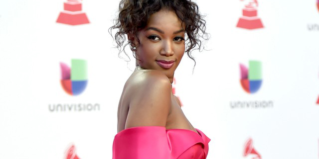

Dona de mim

Nascida e criada em uma família humilde do bairro de Olaria, no subúrbio carioca, aos 6 anos foi morar no Nordeste, mais especificamente em Natal, por causa da transferência do seu pai, militar da Marinha, que foi servir na Base Naval. Em entrevistas, revela ter sofrido bullying na escola, por ser a única criança negra.
Já não me importa a sua opinião, o seu conceito não altera minha visão, foi tanto sim, que agora digo não, porque a vida é louca, mano, a vida é louca
Sua história
Vivendo na capital potiguar, lá ocorreu seu primeiro contato com a música. Iza começou a cantar no coral de uma igreja ainda na infância. Já adolescente, aos 14 anos, começou a fazer pequenos shows em retiros e paróquias da região. Quando criança, ela fazia performances de canto, dança e teatro para os vizinhos e familiares. Aos poucos, passou a se apresentar em outros eventos, mas sem considerar que a música poderia se tornar sua profissão.
Em março de 2018, a cantora lançou seu novo single Ginga, em parceria com o rapper Rincon Sapiência. Em junho, lançou o cover da música Amor Puro com a participação da cantora Maria Gadú para um projeto da sua gravadora Warner Music em homenagem ao dia internacional do org LGBTQ+. Em maio foi lançado o primeiro álbum da cantora intitulado Dona de Mim, que contou com 14 faixas com participações de Rincon Sapiência, Ruxell, Marcelo Falcão, Ivete Sangalo, Carlinhos Brown, Gloria Groove e Thiaguinho. Em setembro foi lançado o terceiro single do seu álbum a música Dona De Mim. Em novembro Iza e Liniker regravaram a música I Will Survive po ara filme Todas As Canções De Amor, estrelado por Bruno Gagliasso e Marina Ruy Barbosa. Em Novembro a cantora Sandy lançou Eu Só Preciso Ser em parceria com Iza, canção que faz parte do novo álbum Nós, Voz, Eles da cantora.